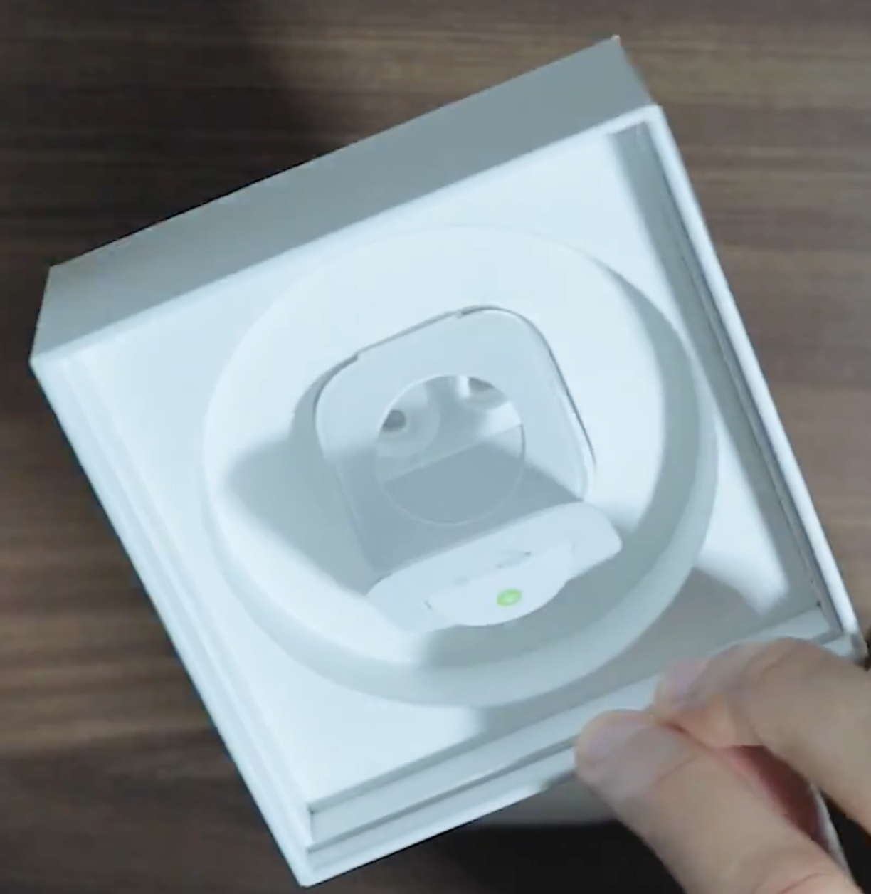
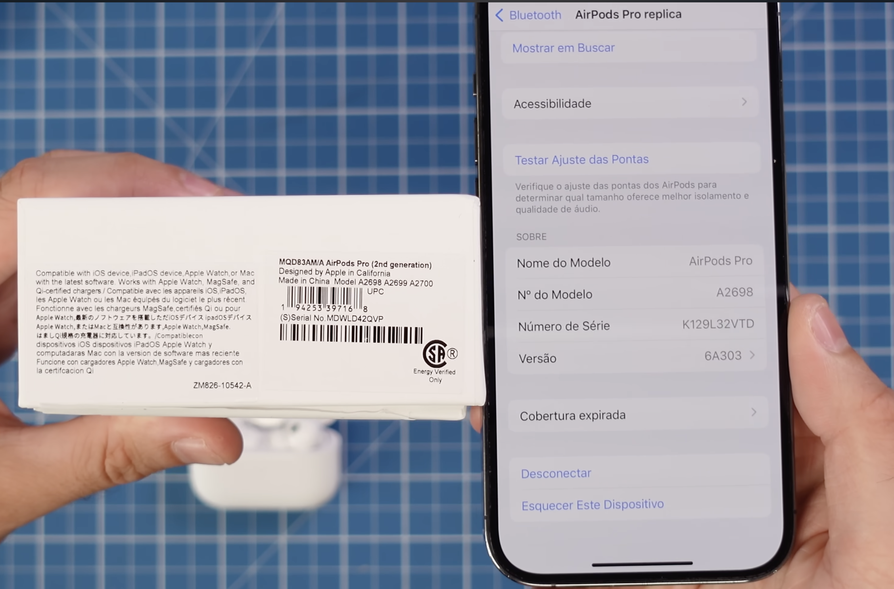
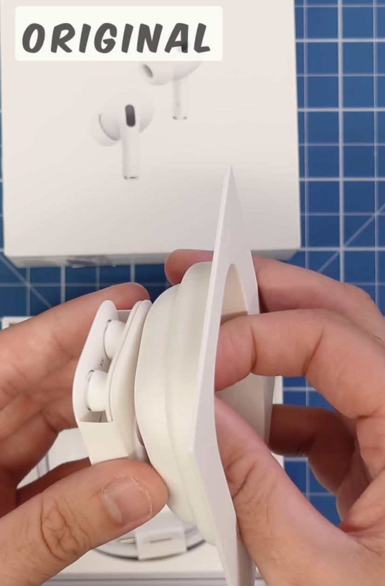

Antes de fechar negócio, confira:
- USB da caixa: branco no original, preto em muitas réplicas.
- Número serial precisa bater entre caixa e iPhone.
- MagSafe, acabamento traseiro e tampa entregam muita coisa.
Compare acabamento, número serial, construção da caixa, borrachinhas, MagSafe, som de carregamento e detalhes de fabricação usando provas visuais reais.
O problema raramente aparece em um único detalhe. Ele aparece no conjunto: serial que não bate, materiais mais simples, tampa mais frágil, software com menos opções, encaixe ruim e acabamento com desvios visíveis.
Selecione os sinais observados no produto, adicione contexto e receba uma avaliação probabilística com score de falsificação, confiança, contradições e próximos testes.
Observe papel, plástico interno, separadores, bordas e firmeza da tampa.

Compare o número serial na caixa e no telefone, e valide a gravação traseira.

Veja se as borrachinhas ficam presas e se as opções de software fazem sentido.

Tampa firme, borda correta, papel na caixa e proteção interna bem resolvida.
Troca automática entre dispositivos Apple e mais opções reais de configuração.
Serial coerente, escrita traseira correta e indicação de fabricação compatível.
Som de carregamento discreto, cancelamento consistente e encaixe firme das pontas.
Abra a galeria completa para ver todas as imagens, especificações observadas e o texto associado a cada comparação.
A página dedicada organiza todas as 32 provas visuais por acabamento, caixa, serial, encaixe, som, MagSafe e fabricação.
Ver fotos e especificações completasUma revisão curta para quem quer validar um AirPods Pro antes de comprar e reduzir o risco de cair em réplica.
Comece pela consistência geral: caixa, tampa, serial, acabamento e porta. Réplicas até podem acertar um ponto isolado, mas costumam falhar no conjunto.
Não. O arquivo informativo destaca que o serial da réplica pode não bater entre caixa e telefone. O importante é a coerência entre as referências, não só a existência do código.
Ajuda como pista. A presença e o acabamento correto da caixa com MagSafe podem fortalecer a análise, mas ainda devem ser combinados com outros sinais físicos.
Cancelamento de ruído com comportamento estranho, menos modos de configuração, som de carregamento fora do padrão e borrachinhas que caem com facilidade.
Não é o ideal. O caminho mais seguro é cruzar várias evidências: embalagem, serial, materiais, traseira, MagSafe, software e encaixe das pontas.